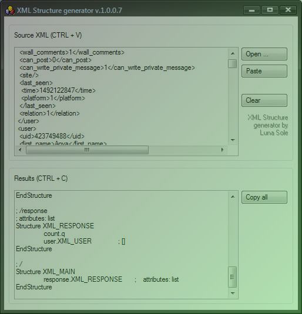

Lunar Place
Time • Space • Etcetera
XML Structure Generator
Recent update: 15/04/2017
A tool to generate PB structures from raw XML text (or XML file).
Sometimes it is helpful in XML data analysis, or just to not declare all required things manually when parsing XML.
Windows-only
Screenshots

Links
[ Other stuff: recently updated pages ]
27/02/2023 / 0 / ...
26/02/2023 / 1 / PCurl
23/02/2023 / 2 / ADBAppTools
30/06/2021 \ 3 \ DialogDesigner2
06/06/2021 \ 4 \ PwnPass
26/06/2019 / 5 / DarkNote
13/11/2017 | 6 | Lunar Ship
02/11/2017 / 7 / TheGallery